Nyzo version 553 (commit on GitHub) adds the documentation server.
The version adds a new run mode. It does not affect the existing run modes.
The changes in this version were prioritized due to the need for instructions for cycle transactions and a desire to avoid adding yet another disjointed instruction page on the main nyzo.co site.
A script has been added for generating the Supervisor configuration file for the documentation server. This was added to the repository instead of adding a configuration file for this run mode. This script automatically sets the path to the Nyzo jar file based on the Nyzo repository path. This avoids the need to manually edit the path that often occurred with the configuration files for other run modes.
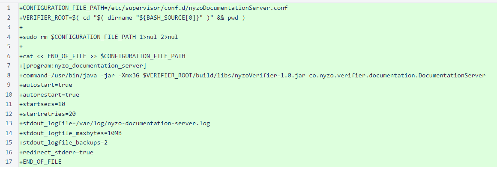In the RunMode enumeration, a new mode has been added for the documentation server.
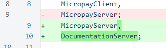The new DocumentationController class provides the core functionality for the documentation server. To use the documentation server, documentation_data_root must be defined in /var/lib/nyzo/production/preferences.
The buildEndpointMap() builds the website endpoints from the contents of the documentation directory. The process() method is called on the root documentation path, and that method recurses down the directory tree.
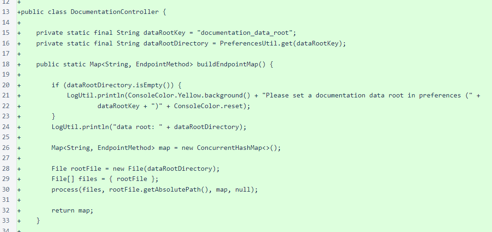The process() method starts by sorting the files in ascending order. Most files in the documentation directory have a numeric prefix to allow ordering to be specified.

All files in the directory are examined. Hidden files and directories are excluded, and only files with accepted extensions are processed. Also, index.html is skipped, because it is processed when its containing directory is processed. While the two nested if statements could be combined into a single statement, the resulting statement would be more difficult to read.
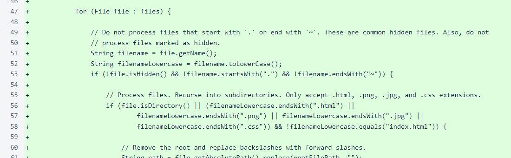Some basic processing of the file path is performed to produce a server path relative to the documentation root. A DocumentationEndpoint is created for each file and directory, and each directory is processed recursively. A parent/child relationship is established between all directories and the files they contain.
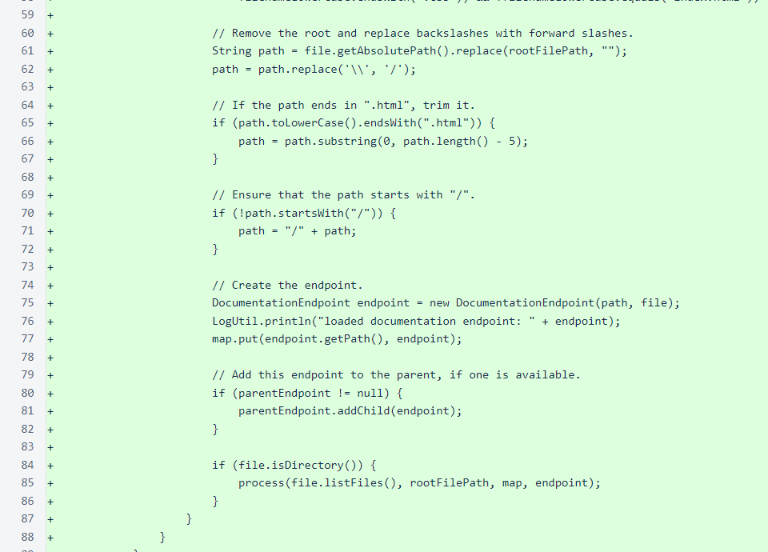The DocumentationEndpoint class encapsulates the information and logic required for producing the appropriate web page for a documentation file or directory, implementing the EndpointMethod interface so that it can be used in the endpointMap of WebListener.
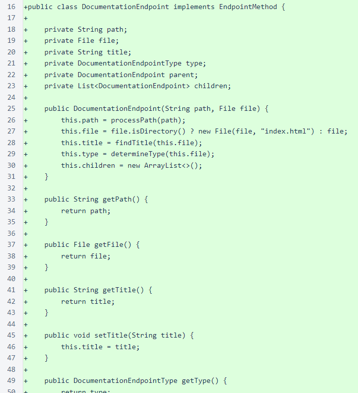The processPath() method separates and reassembles the path. In this process, initial numerals (0-9) before an underscore are removed from each path component. So, 1_page, 99_page, and 00000_page components would all become page.
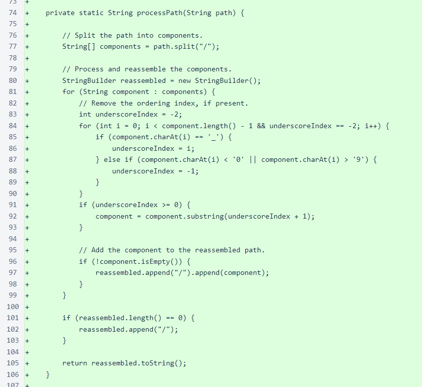The findTitle() method attempts to find a page's title from the HTML file for the page. It looks for <h1> through <h4<> tags for the title, using the file or directory name as a fallback.
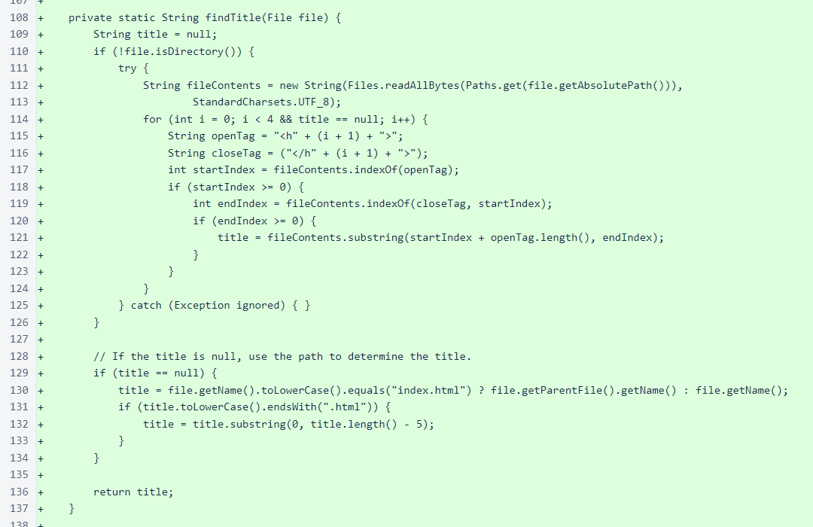The determineType() method classifies the endpoint as HTML, image, CSS, or empty. The type is considered in navigation and response generation, and it is also used to determine the MIME type of the response.
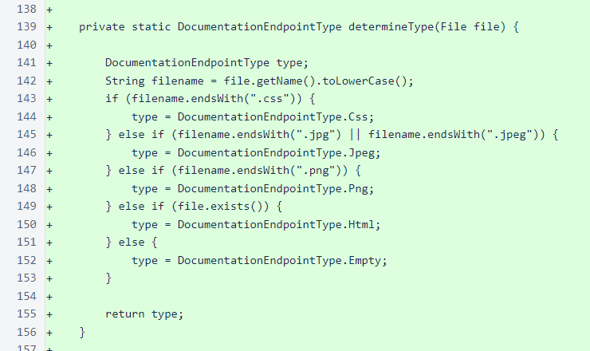The renderByteArray() implements the EndpointMethod interface. HTML files are processed to add navigation elements, and all other files are returned without modification.
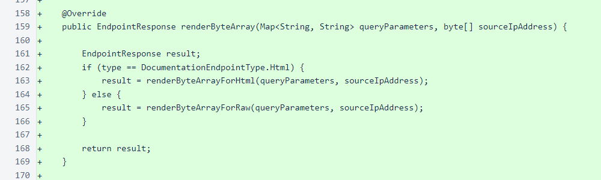The HTML files in the documentation repository are not full HTML documents; they are snippets of HTML. The renderByteArrayForHtml() method wraps these snippets into proper HTML documents, adds some simple styles to the head, and adds navigation elements.
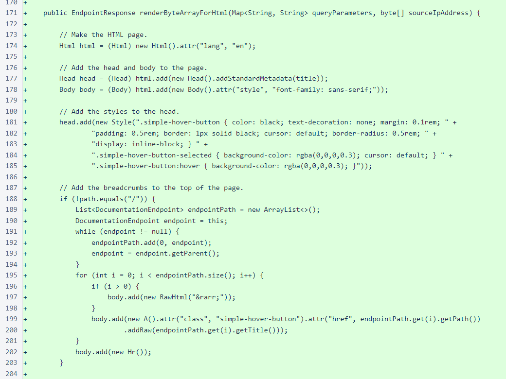The HTML content from the file is added near the top of the page, just below the breadcrumbs that show the navigation path to the current page. For directories (index.html files), buttons for all HTML children are added below the content. For the root path (/), the Nyzo version number is added for reference.

For all content types other than HTML, the bytes of the file are returned unmodified.
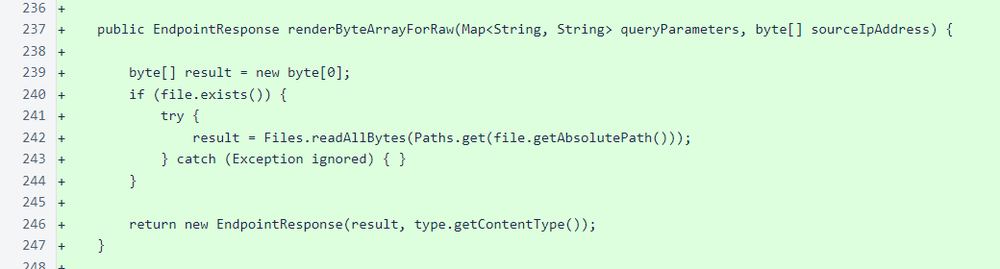The toString() method prints the path of the DocumentationEndpoint. The process() method of DocumentationController prints all endpoints as they are created, so all paths are logged each time the navigation map is loaded.
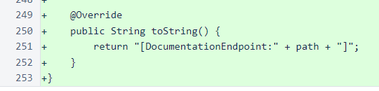The DocumentationEndpointType enumeration was added to provide structure to the different file types that the documentation server processes. Each DocumentationEndpointType references a content (MIME) type defined in the EndpointResponse class.
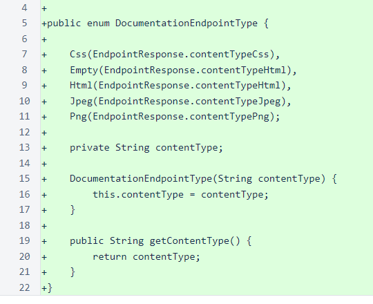The DocumentationServer class provides an entry point for running the documentation server. The class sets the run mode and starts the web listener.

The EndpointResponse class has new constants to support CSS and image responses. A new constructor has been added to allow specification of content type.
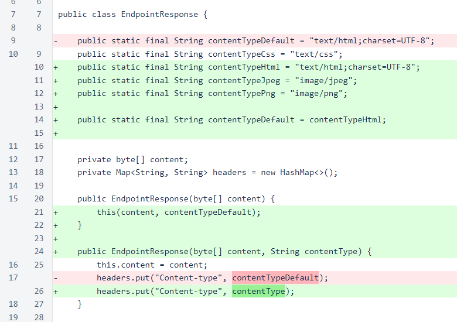The WebListener class is now aware of the DocumentationServer run mode and the DocumentationController as a source of endpoints.
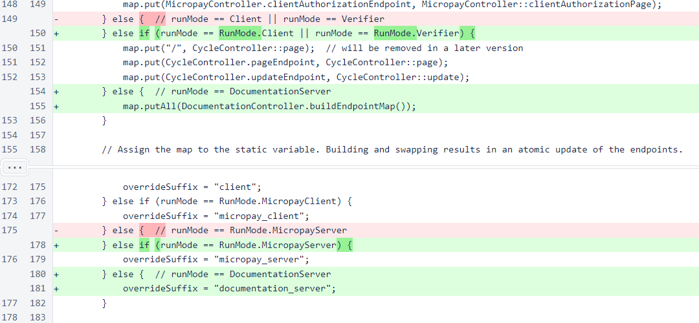The Head class has a new override for adding standard HTML metadata when a page title is provided.
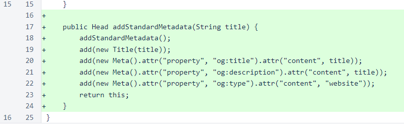The Hr class represents the <hr> HTML tag.
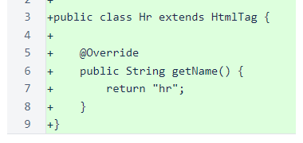Step-by-step instructions for running your own documentation server are available.